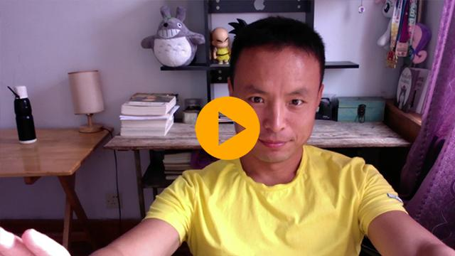

王广忠的简历
朋友们都叫我 Peter ，是一个 JS开发者/CTO/技术作者/视频课程录制者/马拉松运动员 。

- 生活 1983年1月 出生在河北省黄骅市
- 教育 2001年9月 进入河北科技大学，电气工程及其自动化专业
- 教育 2006年9月 华北电力大学读研究生，开始全职搞计算机
- 工作 2009年3月 进入 Asianux 全职做 Linux/C++ 开发，纯英文工作环境
- 项目 2011年3月 开始全职搞 Web 开发
- 工作 2011年12月 发起 好多视频网 ，每周发布一个技术视频，到目前已经坚持了六年时间。
- 工作 2014年1月 和李笑来先生合作，创办 knewcoin.com （已经下线），录制了一系列的比特币和区块链技术的教学视频，包括钱包使用，加密算法，比特币文化，国外优秀演讲翻译等内容。是起码2014年前后，国内录制比特币相关视频最多的一个人。目前，部分当时录制的视频托管在 https://haoqicat.com/bitcoin 。
- 工作 2014年3月 创建 快乐新知比特币 开源资料网站。
- 工作 2014年4月 参与比特币开源项目 貔貅 的开发和技术咨询工作。
- 工作 2017年7月 我更新了这个简历。